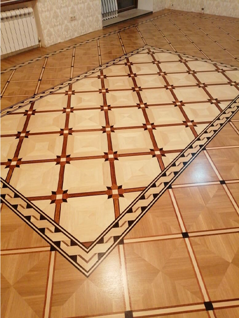
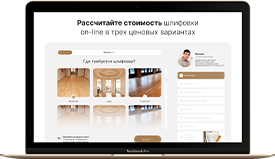
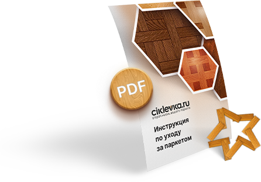

Реставрация паркета своими руками
Читать примерно 3 минуты
Заголовок второго уровня, который можно добавить в редакторе
Паркет по праву считается одним из наиболее красивых и дорогих напольных покрытий. Когда возникает необходимость ремонта такого пола, большинство людей обращается за помощью к профессионалам, не рассчитывая на свои силы: работа с паркетной доской требует определенных знаний и навыков, чтобы не повредить дорогостоящий материал. Но в ряде случаев выполнить ремонт можно и самостоятельно.
Зачем выполнять реставрацию паркетного покрытия?
Даже дорогой и качественный паркет не может служить вечно, а тем более, сохранять красивый внешний вид в течение всего срока эксплуатации. Каждые 5-7 лет ему требуется восстановление или ремонт, сделать который можно и своими руками при наличии нужного оборудования и некоторых знаний.
Восстановление паркетного пола требуется в следующих случаях:
1. Если на поверхности пола появились щели, царапины и другие механические повреждения. Повредить паркет можно разными способами, например, царапины и сколы могут появиться после падения на пол тяжелых предметов.
2. Из-за сухости планки расшатались. Так бывает, если в помещении недостаточно влажности, слишком сухой воздух и высокая температура.
3. Если пол начал скрипеть. Характерный скрип при ходьбе может появиться из-за неправильного монтажа или из-за долгой эксплуатации.
4. При перепадах высоты, неровностях пола, что может быть вызвано как неровным основанием, так и ошибками, допущенными при монтаже паркетного пола.
5. При затоплении. Паркетная доска не любит большого количества воды. Масштабы нанесенного покрытию ущерба зависят от того, как быстро удалить следы затопления (т.е. от продолжительности контакта деревянного напольного покрытия с водой). Если устранить затопление удалось в короткий срок, можно обойтись без полной замены покрытия.
6. Если поверхность паркета потеряла привлекательный первоначальный вид. Со временем в результате систематической эксплуатации поверхность пола тускнеет, искажается ее расцветка.
Способы реставрации паркета
Для восстановления внешнего вида и эксплуатационных свойств паркета могут использоваться различные методы и приемы (в зависимости от состояния напольного покрытия, степени его износа, деформации или повреждения). В целом ремонт паркетного пола делится на такие виды:
1. Плановый ремонт. Выполняется с определенной периодичностью после укладки нового паркета. Временные промежутки сравнительно одинаковые (в среднем, это один раз на 3-5 лет). Если выполнять такой ремонт регулярно, паркетное покрытие прослужит дольше заявленного производителем срока.
2. Локальное восстановление. Выполняется при обнаружении заметных изъянов в досках. В большей степени такой ремонт требуется, когда появляются трещины, потертости и стертости, скрип при ходьбе. В рамках ремонта требуется полностью или частично заменить планки паркета.
3. Капитальный ремонт. Уместен при необходимости полной замены паркетного пола, например, после затопления. При выполнении капитального ремонта старый пол демонтируется и укладывается новый. Также в ряде случаев деревянный пол может требовать лишь обновления его поверхности.
Если паркет находится в хорошем состоянии (большая его часть), но уже немного износился, потерял блеск, а на поверхности появились дефекты (царапины, небольшие трещины, следы от мебели и прочее), его поверхность можно восстановить путем циклевки дубового паркета. Сделать это можно своими руками, так как демонтаж напольного покрытия не требуется, но лучше доверить работу профессионалам.
Циклевка паркета представляет собой механическую обработку поверхности напольного покрытия. При этом с помощью специального оборудования или ручного инструмента выполняется срезание верхнего очень тонкого слоя древесины, после чего поверхность шлифуется и покрывается лакокрасочным средством.
У вас старый паркет?
Пройдите тест и узнайте стоимость его восстановления
"ТОП-6 правил как не быть обманутым при заказе циклевки"
Куда вам удобнее отправить?